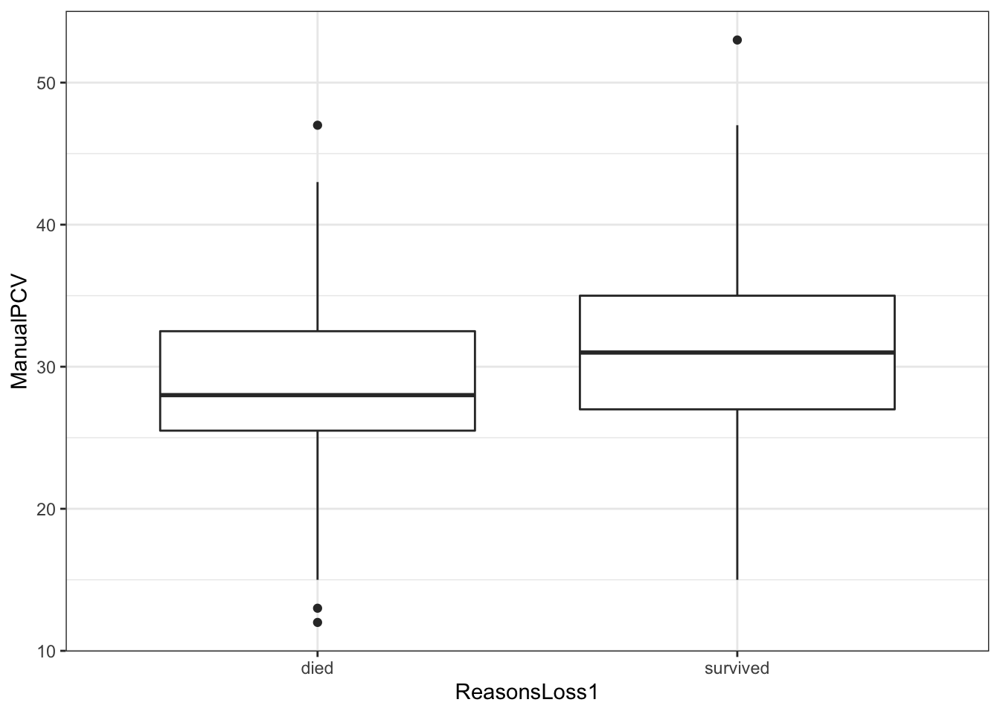

Chapter 5 Data visualisation
The ggplot2 package from the tidyverse packages is used for data visualisation. gg stands for grammar of graphics.
You can build every graph from the same 3 key components:
- a data set: you provide the raw data that you would like to visualize
- a coordinate system default - cartesian coordinate system (can flip, fix them, use polar coordinates, transform - eg “sqrt”, “log” etc)
- geom - the visual marks that represent your data points. It represents what you see - the points, the lines, paths, text, labels, boxplots, bars, rasters etc - the type of plot the layer contains - see ggplot2 cheat sheet
In addition, you can provide the other components:
Scales - to render the layers correctly (map the data to the graphical output) - mapping continous variables
Faceting - help you drill-down into the data as subplots using one or more variables (similar to pivot charts in Excel)
Themes - control details of the display - eg fonts, color scheme, size - customization of the display
This package allows you to create elegant data visualizations (print quality graphics) - rather quickly with very “fine grain control”
5.1 Starting with ggplot
When using a one variable that is continuous, the following geoms are relevant:
- geom_area()
- geom_density()
- geom_dotplot()
- geom_freqpoly()
- geom_histogram()
- geom_qq()
When visualising a one variable that is discrete, geom_bar() is relevant
For two variables where both x and y is continuous, we use the following geoms:
- geom_jitter()
- geom_point()
- geom_quantile()
- geom_smooth()
For two variables where x is discrete and y is continuous, the following geoms are relevant:
- geom_col()
- geom_boxplot()
- geom_dotplot()
- geom_violin()
Where both variables are discrete, you use a geom_count()
More on the relevant geom to use can be accessed here
For the visualisation tutorial, we will use the ideal dataset previously used in this tutorial.
5.1.1 geom_bar
## ── Attaching packages ─────────────────────────────────────── tidyverse 1.3.0 ──## ✓ ggplot2 3.3.3 ✓ purrr 0.3.4
## ✓ tibble 3.1.0 ✓ dplyr 1.0.5
## ✓ tidyr 1.1.3 ✓ stringr 1.4.0
## ✓ readr 1.4.0 ✓ forcats 0.5.0## ── Conflicts ────────────────────────────────────────── tidyverse_conflicts() ──
## x dplyr::filter() masks stats::filter()
## x dplyr::lag() masks stats::lag()##
## ── Column specification ────────────────────────────────────────────────────────
## cols(
## .default = col_double(),
## CalfID = col_character(),
## sublocation = col_character(),
## CADOB = col_character(),
## Education = col_character(),
## Distance_water = col_character(),
## VisitID = col_character(),
## VisitDate = col_character(),
## ReasonsLoss1 = col_character(),
## VisitDate1 = col_date(format = ""),
## CADOB1 = col_date(format = "")
## )
## ℹ Use `spec()` for the full column specifications.## [1] "CalfID" "CalfSex" "sublocation" "CADOB"
## [5] "ReasonsLoss" "Education" "Distance_water" "RecruitWeight"
## [9] "VisitID" "VisitDate" "Weight" "ManualPCV"
## [13] "Theileria.spp." "ELISA_mutans" "ELISA_parva" "Q.Strongyle.eggs"
## [17] "ReasonsLoss1" "ADWG" "timespent" "Age"
## [21] "VisitDate1" "CADOB1" "VisitTime" "VisitWeek"
## [25] "WeightMax" "WeightMin"## Compare animals fromn the dataset that died and those that survived
ggplot(data=ideal, aes(x = ReasonsLoss1)) +
geom_bar() + theme_bw() +
labs(x="", y ="Number of Calves",
title = "Survival of calves in the first year of life")##
## died survived
## 0.1777778 0.8222222# Add some customization for labels and theme.
ggplot(ideal, aes(x = ReasonsLoss1)) +
theme_bw() +
geom_bar() +
labs(y = "Number of calves",
title = "Survival of calves to one year")# Survival by CalfSex - use color to add dimension of CalfSex
ideal <- ideal %>%
mutate(CalfSex1 = ifelse(CalfSex==1, "Male", "Female"))
ggplot(ideal, aes(x = ReasonsLoss1, fill = CalfSex1)) +
geom_bar()# Survival by CalfSex - use color to add dimension of CalfSex
ideal <- ideal %>%
mutate(CalfSex1 = ifelse(CalfSex==1, "Male", "Female"))
ggplot(ideal, aes(x = CalfSex1, fill = ReasonsLoss1)) +
theme_bw() + geom_bar() +
labs(y = "Number of calves", title = "Survival of calves by Sex during the first year of life")- When including faceting and flip the coordinates
## [1] "CalfID" "CalfSex" "sublocation" "CADOB"
## [5] "ReasonsLoss" "Education" "Distance_water" "RecruitWeight"
## [9] "VisitID" "VisitDate" "Weight" "ManualPCV"
## [13] "Theileria.spp." "ELISA_mutans" "ELISA_parva" "Q.Strongyle.eggs"
## [17] "ReasonsLoss1" "ADWG" "timespent" "Age"
## [21] "VisitDate1" "CADOB1" "VisitTime" "VisitWeek"
## [25] "WeightMax" "WeightMin" "CalfSex1"ideal <- ideal %>%
mutate(CalfSex1 = ifelse(CalfSex==1, "Male", "Female"))
ggplot(ideal, aes(x = sublocation, fill = ReasonsLoss1)) +
theme_bw() + geom_bar() + coord_flip() + facet_wrap(~CalfSex1) +
labs(y = "Number of calves", title = "Survival of calves by sublocation and sex")# Survival by Sublocation, and by CalfSex
ideal <- ideal %>%
mutate(CalfSex1 = ifelse(CalfSex==1, "Male", "Female"))
ggplot(ideal, aes(x = sublocation, fill = ReasonsLoss1)) +
theme_bw() + geom_bar() + coord_flip() + facet_wrap(~CalfSex1) +
labs(y = "Number of calves", title = "Survival of calves by sub-location and Calf Sex")
# Survival by Sublocation, and by CalfSex
ideal <- ideal %>%
mutate(CalfSex1 = ifelse(CalfSex==1, "Male", "Female"))
ggplot(ideal, aes(x = sublocation, fill = ReasonsLoss1)) +
theme_bw() + geom_bar() + coord_flip() + facet_wrap(~CalfSex1) +
labs(y = "Number of calves", title = "Survival of calves by sub-location and Calf Sex")5.1.2 geom_histogram
##
## 12 13 15 17 18 19 20 21 22 23 24 25 26 26.5 27 28
## 1 1 2 1 4 2 2 4 3 3 6 15 21 1 21 17
## 29 30 31 32 33 34 35 35.5 35.8 36 37 38 39 40 41 42
## 14 20 14 21 12 12 12 1 1 8 10 8 2 12 2 5
## 43 44 45 46 47 53
## 1 4 2 1 2 1## `stat_bin()` using `bins = 30`. Pick better value with `binwidth`.## Warning: Removed 1 rows containing non-finite values (stat_bin).ggplot(ideal, aes(x = ManualPCV, fill=ReasonsLoss1)) + theme_bw() +
geom_histogram() + labs(y = "Number of calves", x = "Blood PCV (manual method)")## `stat_bin()` using `bins = 30`. Pick better value with `binwidth`.## Warning: Removed 1 rows containing non-finite values (stat_bin).ggplot(ideal, aes(x = ManualPCV, fill=ReasonsLoss1)) + theme_bw() +
geom_histogram() +
labs(y = "Number of calves",
x = "Blood PCV (manual method)")## `stat_bin()` using `bins = 30`. Pick better value with `binwidth`.## Warning: Removed 1 rows containing non-finite values (stat_bin).
5.1.3 geom_boxplots
## Warning: Removed 1 rows containing non-finite values (stat_boxplot).
ggplot(ideal, aes(x=ReasonsLoss1, y=ManualPCV)) + theme_bw() +
geom_boxplot() + facet_wrap(~CalfSex1) +
labs(y = "ManualPCV", x = "Survival")## Warning: Removed 1 rows containing non-finite values (stat_boxplot).5.1.4 Facetwrap using two variables
ggplot(ideal, aes(x=ManualPCV, fill=Education)) + theme_bw() +
geom_bar() +
facet_wrap(CalfSex1~ReasonsLoss1) +
labs(y = "Number of calves", x = "Survival")## Warning: Removed 1 rows containing non-finite values (stat_count).## Warning: position_stack requires non-overlapping x intervals
## Warning: position_stack requires non-overlapping x intervals5.1.5 using histogram and faceting
ggplot(ideal, aes(x=ManualPCV, fill=Education)) + theme_bw() +
geom_histogram() +
facet_wrap(CalfSex1~ReasonsLoss1) +
geom_density(alpha = 0.5) +
labs(y = "Number of calves", x = "Survival")## `stat_bin()` using `bins = 30`. Pick better value with `binwidth`.## Warning: Removed 1 rows containing non-finite values (stat_bin).## Warning: Removed 1 rows containing non-finite values (stat_density).5.1.6 using density
niceplot1 <- ggplot(ideal, aes(x=ManualPCV, fill=CalfSex1)) + theme_bw() +
#geom_histogram() +
facet_wrap(Education~ReasonsLoss1) +
geom_density(alpha = 0.5) +
labs(y = "Number of calves", x = "ManualPCV")
niceplot1## Warning: Removed 1 rows containing non-finite values (stat_density).5.1.7 geom_point using the iris dataset
## Sepal.Length Sepal.Width Petal.Length Petal.Width Species
## 1 5.1 3.5 1.4 0.2 setosa
## 2 4.9 3.0 1.4 0.2 setosa
## 3 4.7 3.2 1.3 0.2 setosa
## 4 4.6 3.1 1.5 0.2 setosa
## 5 5.0 3.6 1.4 0.2 setosa
## 6 5.4 3.9 1.7 0.4 setosa5.1.8 Using more aesthetics in geom_point
## [1] "Sepal.Length" "Sepal.Width" "Petal.Length" "Petal.Width" "Species"ggplot(iris, aes(x = Petal.Length, y = Sepal.Width, col = Species, size = Petal.Width)) +
geom_point()5.1.9 Using statistics with ggplot
## Warning: Ignoring unknown parameters: fun.y## No summary function supplied, defaulting to `mean_se()`
ggplot(iris, aes(Species, Sepal.Length)) +
geom_bar(stat = "summary", fun.y = "mean", fill = "blue")## Warning: Ignoring unknown parameters: fun.y## No summary function supplied, defaulting to `mean_se()`ggplot(iris, aes(Species, Sepal.Length)) +
geom_bar(stat = "summary", fun.y = "mean", fill = "#ff0080", col = "black") +
geom_point()## Warning: Ignoring unknown parameters: fun.y## No summary function supplied, defaulting to `mean_se()`ggplot(iris, aes(Species, Sepal.Length)) +
geom_bar(stat = "summary", fun.y = "mean", fill = "gray40", col = "black") +
#geom_point() +
geom_point(position = position_jitter(0.2), size = 3, shape = 21)## Warning: Ignoring unknown parameters: fun.y## No summary function supplied, defaulting to `mean_se()`5.1.10 Working with themes
?theme
niceplot <- ggplot(iris, aes(Species, Sepal.Length)) +
geom_bar(stat = "summary", fun.y = "mean", fill = "blue", col = "black") +
geom_point(position = position_jitter(0.2), size = 3, shape = 21)## Warning: Ignoring unknown parameters: fun.y## No summary function supplied, defaulting to `mean_se()`niceplot + theme(panel.grid = element_blank(),
panel.background = element_rect(fill = "red"),
panel.border = element_rect(colour = "blue", fill = NA, size = 0.2))## No summary function supplied, defaulting to `mean_se()`